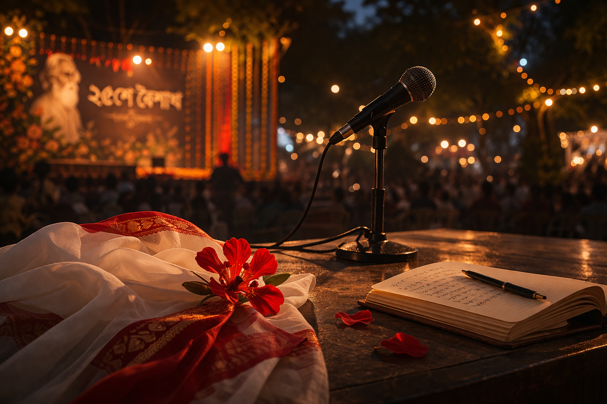

Personal Blog • March 2, 2026

Chapter 4 of 7
A Voice in the Dark
Estimated reading time: --
The 25th of Boishakh arrived the way it always did in Dhaka — wrapped in heat and the particular golden light of a Bengali afternoon that made everything look slightly more significant than it was. The open-air stage at Dhaka University had been dressed for the occasion: marigolds strung between posts, a microphone standing alone at the center, and rows of plastic chairs filling steadily with students and faculty who had come to mark Rabindranath Tagore's birthday the way their parents and grandparents had before them — with music, with poetry, with the quiet insistence that some things are worth preserving.
Amaya had come with Priya and two others from her college. She had dressed carefully without admitting to herself that she had dressed carefully — a white and red cotton sari, her hair pinned simply, a small pair of gold earrings that had belonged to her mother. It was Rabindra Jayanti. It was appropriate to make an effort. That was all.
They found seats toward the middle, and Amaya settled in with the comfortable anticipation of someone who genuinely loved these evenings — the gradual darkening of the sky, the way the stage lights came up slowly as if reluctant to interrupt the dusk, the first notes of a sitar from somewhere offstage. Around her, the audience arranged itself into the particular stillness that only live music can produce, the kind where everyone's shoulders drop a fraction of an inch without their noticing.
The program moved through its early acts — a dance piece, a recitation, a student choir that was earnest if slightly unsteady on the high notes. Amaya watched with genuine attention, her notebook open on her lap out of habit, a pen tucked behind her ear. Priya leaned over twice to whisper commentary that made Amaya press her lips together to keep from laughing.
It was during the intermission that she excused herself to find water.
The stalls near the edge of the grounds were crowded, and by the time she had gotten a bottle and made her way back, the program had resumed. She was still several rows from her seat when she heard it — a voice, and then the first line of a Tagore song — and something in the quality of it made her stop.
She had heard Tagore sung many times. She had grown up with it — at school programs, at family gatherings, drifting from the radio on Sunday mornings. She knew what it was supposed to sound like: careful, reverent, technically precise, the emotion held at a respectful distance from the melody.
This was not that.
The voice on stage sang Tagore the way Tagore had perhaps meant to be sung — with the full weight of the words behind each note, without the self-consciousness that usually crept in when someone knew they were being listened to. It was not a perfect voice, technically speaking. It had an edge to it, a roughness in the lower register that a purist might have corrected. But it was honest in a way that perfect voices rarely were, and honesty, Amaya had always believed, was worth more than precision.
She looked toward the stage.
She recognized him before her mind had fully processed what she was seeing.
Nafis stood at the microphone with his eyes half-closed, the way people close their eyes not for the audience's benefit but because the song requires it — because some things are easier to mean when you are not watching yourself mean them. He was in a white punjabi, the stage lights catching the edge of his profile, and he sang with a stillness that was almost startling from someone whose default mode, in her limited but vivid experience of him, was a kind of restless, kinetic energy.
Amaya stood where she was, three rows from her seat, the water bottle cool in her hand, and listened.
The song was Tumi Robe Nirobe. You will remain, in silence, in the depths of my being. One of Tagore's most quietly devastating compositions — a song about presence, about the way a person can inhabit you without trying, without permission, simply by existing and then continuing to exist in memory long after they have left the room.
She told herself she was simply pausing to listen. That the song was beautiful and she had stopped because of the song, not because of the person singing it.
She told herself this with less conviction than she would have liked.
When it was over, the applause broke the spell cleanly — the audience returning to itself, the stage lights shifting, Nafis stepping back from the microphone with the slightly dazed expression of someone emerging from something private. He looked out at the crowd without seeming to see it. Then someone said something to him from the wings and he smiled — his ordinary smile, the one she had seen directed at other people, easy and slightly crooked — and walked off stage.
Amaya went back to her seat.
"You missed the best part," Priya said. "There was a boy from Notre Dame who just sang and honestly, Amaya —"
"I heard him," Amaya said.
Priya looked at her. Then looked more carefully. "You heard him."
"I was standing at the back. I caught the end of it."
"And?"
Amaya uncapped her water bottle and took a measured sip. "He was good," she said, in the tone of someone offering a factual assessment of a piece of furniture.
Priya stared at her for three full seconds. "That was the debate boy, wasn't it."
Amaya opened her notebook to a blank page and wrote nothing on it.
"Amaya."
"Watch the program, Priya."
* * *
She found him afterward — or rather, she chose to walk in the direction where she could see him standing with a small group near the edge of the stage area, and if that walk happened to bring her close enough for eye contact, it was incidental.
It was not incidental.
He saw her at almost the same moment she slowed her pace. Something crossed his expression — surprise, and then something quieter and less easy to name. He said something brief to the person beside him and took a few steps in her direction, meeting her at an unmarked point between his group and hers, the way people do when they have both decided something without discussing it.
"I didn't know you'd be here," he said.
"It's Rabindra Jayanti," she said. "I didn't know you sang."
"It's not something that comes up in debate."
"No," she agreed. "It doesn't."
A pause settled between them — not uncomfortable, but full, the way pauses are when both people are thinking more than they are saying. Around them the crowd was dispersing slowly into the warm evening, voices and laughter drifting upward into a sky that had deepened to a soft, starless dark.
"You were good," she said. The same words she had used with Priya, but stripped now of their careful neutrality. She said it the way she would have written it — plainly, without decoration, meaning it precisely as much as it sounded.
Nafis looked at her for a moment. "Thank you," he said, and unlike many people who receive compliments, he did not deflect it or diminish it. He simply accepted it, which she found, inexplicably, more disarming than any amount of charm would have been.
"The roughness in the lower register," she added, because she could not quite help herself. "Don't fix it. It's what makes it honest."
He blinked. Then a slow smile crossed his face — not the easy, public one she had seen on stage, but something smaller and more genuine. "That's a very specific thing to notice."
"I pay attention to things."
"I remember," he said.
They stood for a moment longer, the Dhaka evening warm around them, the last of the stage lights going down behind him. Then Priya appeared at Amaya's elbow with the studied casualness of someone who had absolutely been watching from a distance and had timed her arrival deliberately.
"Sorry to interrupt," Priya said, not looking sorry in the least. "We should head back."
Amaya nodded. She looked at Nafis. "Goodnight."
"Goodnight," he said.
She walked away with Priya, who waited a full thirty seconds before speaking. "So."
"Don't."
"I'm just going to say —"
"Priya."
"You like him."
Amaya walked in silence for a moment, her notebook under her arm, the evening air warm on her face. Somewhere behind her, in the dispersing crowd, she was fairly certain she could still hear the ghost of that song — the particular ache of it, the way it had sat in the air above the stage and refused to be entirely ordinary.
You will remain, in silence, in the depths of my being.
"I'm going home," she said.
Priya smiled and said nothing more. She didn't need to.